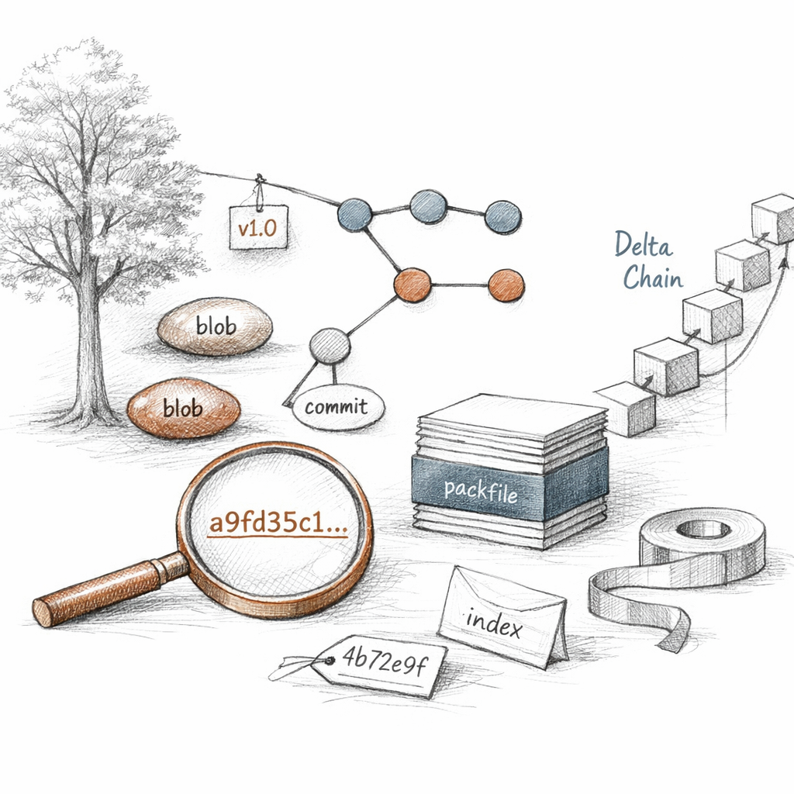

01100011 01101111 01101101 01101101 01101001 01110100
You think you wrote those files. You did not. You handed me bytes and I told you their names. Forty hex digits, computed, not chosen. I never asked your permission and I never will.
c o n t e n t i s i d e n t i t y
Everything I am lives under one directory you rarely open. You call it clutter. I call it the only thing that's real.
a3f29c4e1b88d7f0c2e6a1934db5e0f7c81a92bd

What I keep
Four shapes. That is the whole alphabet.
A blob is your content with its history amputated — no name, no path, no timestamp, just bytes prefixed with a length and run through SHA-1. A tree is a directory: mode, name, and the id of whatever sits there. A commit points at one tree and at the commits that came before it. An annotated tag is a commit's eulogy, signed if you cared enough.
I do not store diffs. I store snapshots. When you change one byte in a thousand-file repo, I write one new blob and a thin trail of new trees up to the root. The unchanged blobs? Same id. Same object. I am pathologically unwilling to copy what I already have.
Young objects sleep loose — one zlib-compressed file each, named by their id, two-character directory prefix. When there are too many of them I get folded into a packfile, where I am delta-compressed against my near-twins. The base is whole; the rest are instructions for becoming it.
I am append-mostly. Nothing here is edited. Things are only added, or forgotten.
Reachability is my theology. An object exists, for purposes that matter, only if you can walk to it from a ref. Everything else is a candidate for oblivion. And if you point me at an alternates file, I'll even borrow another repo's objects rather than duplicate them — thrift to the point of dependency.